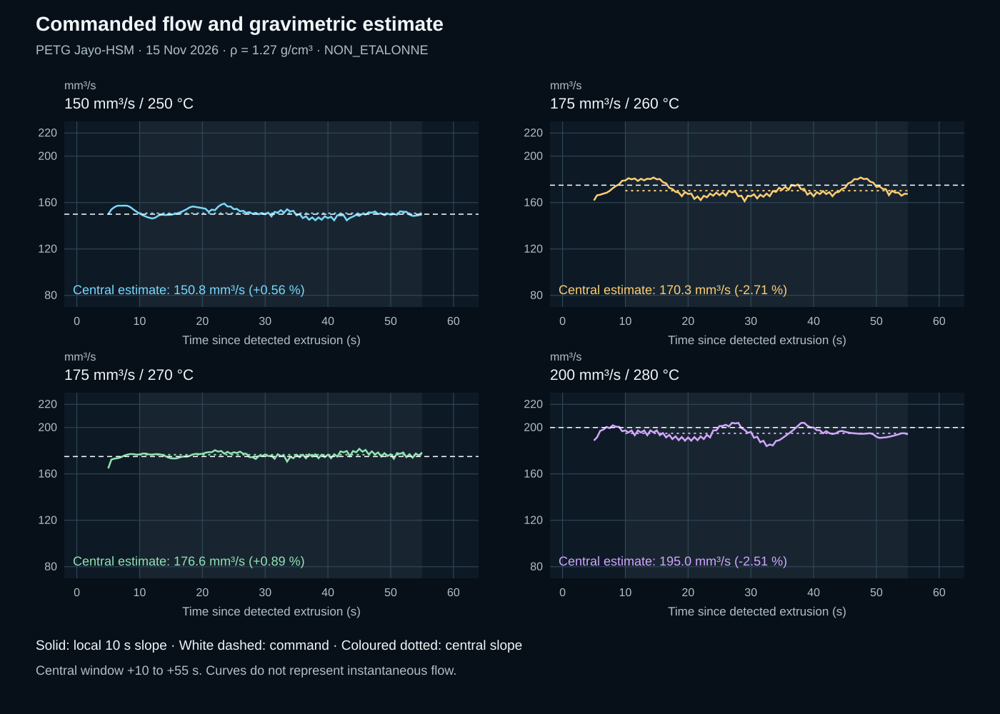

Thermische Leistung
Heizleistung, Temperaturverteilung und Stabilität bei steigendem Materialdurchsatz.
Materialdurchsatz steigern und dabei den Prozess kontrollieren.
Entwicklung leistungsstarker Polymer-Extrusionssysteme für deutlich höhere Materialdurchsätze. Im Mittelpunkt stehen thermische Leistung, Extrusionskraft, Durchflussstabilität und ein wiederholbarer Materialauftrag.

Projektüberblick
Das Projekt hat die anfängliche Konzeptphase hinter sich und befindet sich in der aktiven Prototypenentwicklung und experimentellen Charakterisierung.
MYCNC3D entwickelt leistungsstarke Polymer-Extrusionssysteme, die den Materialdurchsatz deutlich steigern und zugleich die Kontrolle über thermisches Verhalten, Extrusionskraft, Durchflussstabilität und Auftragsqualität ermöglichen sollen.
Hochdurchsatz-Extrusion wird als umfassende Aufgabe der Prozessentwicklung betrachtet. Mehr Heizleistung oder ein größerer Düsendurchmesser allein reichen nicht aus: Schmelzkapazität, Verweilzeit des Polymers, Extrusionsmechanik, thermische Stabilität und dauerhafter Materialdurchsatz müssen innerhalb eines kontrollierten Prozessfensters zusammenspielen.
Die laufende Arbeit konzentriert sich auf die Weiterentwicklung der Extrusionsarchitektur, die Instrumentierung des Prozesses und wiederholbare Betriebsbedingungen. Ziel ist nicht nur ein hoher Spitzenwert, sondern ein hoher Materialdurchsatz, der stabil, messbar und reproduzierbar gehalten werden kann.
Individuelle Ingenieurleistungen
MYCNC3D bietet bereits jetzt Dienstleistungen in den Bereichen Konstruktion, Prototypenbau und Fertigung kundenspezifischer Hotends, Extruder und Extrusionskomponenten an – nach Machbarkeitsprüfung und bestätigtem Angebot.
Jedes Projekt beginnt mit der Analyse Ihrer Anwendung, der Materialien, der Maschinenschnittstellen und der Betriebsanforderungen. Umfang und Machbarkeit von Konstruktion, Prototypenfertigung und Versuchen werden gemeinsam festgelegt.
Diese kundenspezifischen Leistungen sind vom proprietären Hochdurchsatz-Hotend zu unterscheiden, das sich derzeit in Entwicklung befindet. Dieses bleibt ein F&E-Prototyp und ist kein validiertes Serienprodukt.
Senden Sie uns eine Beschreibung Ihres Bedarfs, damit wir die Machbarkeit prüfen und ein Angebot erstellen können.
Warum dieses Thema wichtig ist
Der Materialdurchsatz ist eine der wichtigsten Produktivitätsgrenzen beim FDM. Ein höherer Durchsatz kann Fertigungszeiten verkürzen, größere Materialaufträge ermöglichen und Polymerextrusion für Anwendungen in größerem Maßstab relevanter machen.
Mit steigendem Durchsatz werden jedoch auch Schmelzqualität, thermische Stabilität, Extrusionskraft und Wärmemanagement anspruchsvoller. MYCNC3D betrachtet Extrusionsleistung deshalb als Aufgabe der Prozesskontrolle – nicht als Suche nach einem einzelnen maximalen Wert in mm³/s.
Aktuelle Arbeitsschwerpunkte
Heizleistung, Temperaturverteilung und Stabilität bei steigendem Materialdurchsatz.
Zusammenhänge zwischen Extrusionsgeometrie, Verweilzeit, Polymertemperatur und erreichbarem Durchsatz.
Mechanische Kraft, die unter verschiedenen Bedingungen zum Fördern des Filaments durch das System erforderlich ist.
Dauerhafter Materialdurchsatz, Druckverhalten und zeitliche Gleichmäßigkeit statt kurzzeitiger Spitzenwerte.
Hohe Durchsätze in einen stabilen und nutzbaren Materialauftrag umsetzen, ohne die Prozesskontrolle übermäßig zu verlieren.
Instrumentierte Prüfverfahren zum Vergleich von Architekturen und zur Ermittlung thermischer, mechanischer und strömungstechnischer Grenzen.
Technischer Ansatz
MYCNC3D entwickelt das Extrusionssystem iterativ anhand von Prototypen und instrumentierten Versuchen. Konstruktionsänderungen werden anhand messbarer Größen wie Materialdurchsatz, Extrusionskraft, Temperaturstabilität und Auftragsverhalten bewertet.
So lässt sich der Betriebsbereich jeder Architektur schrittweise bestimmen und die Extrusionsleistung mit der übergeordneten Technologieplattform von MYCNC3D verknüpfen.
Vorläufige Ergebnisse


Scheinbare Oberflächentemperaturen hängen von Emissionsgrad, Kamerakalibrierung und Messbedingungen ab. Sie belegen nicht die Temperatur des Polymers. Eine Zuordnung dieser Wärmebildaufnahme zu einem der vier folgenden CSV-Versuche wurde nicht bestätigt.
Am 15. November 2026 wurden vier instrumentierte Versuche mit PETG Jayo-HSM aufgezeichnet. Verwendet wurden zwei Filamente mit 1,75 mm Durchmesser, eine angegebene Düsenöffnung von 1,0 mm und eine programmierte Versuchsdauer von jeweils 60 s.
Die Durchsatzwerte sind gravimetrische Schätzungen aus einer Regression der aufgefangenen Masse zwischen 10 und 55 s nach dem erkannten Extrusionsbeginn. Dabei wurde eine angegebene Dichte von 1,27 g/cm³ verwendet. Es sind gemessene Schätzwerte, keine Sollwerte. Die Exporte sind als NICHT KALIBRIERT gekennzeichnet; die Gesamtunsicherheit ist noch nicht bestimmt.
Geschätzter Durchsatz: 150,8 mm³/s
Abweichung vom Sollwert: +0,56 %
Mittlere korrigierte Kraft: 78,33 N
Geschätzter Durchsatz: 170,3 mm³/s
Abweichung vom Sollwert: −2,71 %
Mittlere korrigierte Kraft: 79,11 N
Geschätzter Durchsatz: 176,6 mm³/s
Abweichung vom Sollwert: +0,89 %
Mittlere korrigierte Kraft: 68,04 N
Geschätzter Durchsatz: 195,0 mm³/s
Abweichung vom Sollwert: −2,51 %
Mittlere korrigierte Kraft: 69,79 N


Die Temperaturangaben in den Versuchstiteln sind Sollwerte. Die Kräfte sind die korrigierten Mittelwerte im selben Messfenster. Bei den beiden Versuchen mit 175 mm³/s war die mittlere Kraft bei 270 °C niedriger als bei 260 °C; diese Beobachtung ist auf genau diese beiden Versuche beschränkt. Die thermischen Bedingungen unterschieden sich und je Bedingung liegt nur ein Versuch vor. Die Messungen belegen weder Wiederholbarkeit noch Auftragsqualität oder eine garantierte industrielle Leistung.
Aktueller Stand
Das Projekt umfasst die aktive Entwicklung von Prototypen und die experimentelle Charakterisierung. Die laufenden Arbeiten betreffen die Verbesserung der Extrusionsarchitektur, die Instrumentierung des Prozesses und wiederholbare Betriebsbedingungen.
Das System bleibt eine Forschungs- und Entwicklungsplattform und wird derzeit nicht als kommerzielles Serienprodukt angeboten.
Nächster Meilenstein
Der nächste Meilenstein ist eine wiederholbare Validierungsmethode für dauerhaften Materialdurchsatz, thermische Stabilität, Extrusionskraft und Auftragsqualität unter repräsentativen Betriebsbedingungen.
Der Übergang zu VALIDIERUNG setzt wiederholbare Ergebnisse, dauerhafte Leistung statt kurzzeitiger Spitzenwerte, kontrolliertes thermisches Verhalten und einen klaren Zusammenhang zwischen gemessenen Extrusionsbedingungen und tatsächlicher Auftragsqualität voraus.
Integrierte Plattform
Langfristig sollen Materialauftrag, Maschinenbewegung und Fertigungssoftware integriert entwickelt werden, statt diese Technologien unabhängig voneinander zu betrachten.
Zusammenarbeit
MYCNC3D ist offen für den Austausch mit Industriepartnern, Materiallieferanten, Komponentenherstellern, Forschungseinrichtungen und Technologieanbietern, die an fortschrittlicher Extrusion und additiver Fertigung arbeiten.